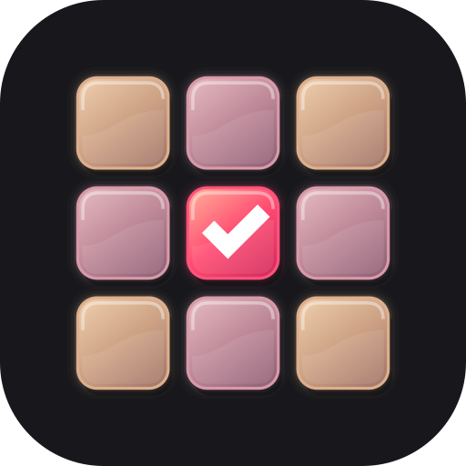

갤러리에서 바로 시작
사진을 고른 뒤 공유 → Pic Cut.
한 장이든 여러 장이든 새 묶음으로 열립니다.

piccut.묶어서 보고, 자세히 비교하고.
한 장이어도 여러 장이어도, 원하는 만큼 남기세요.
정답은 한 장이 아니니까.
선택은 언제든 바꿀 수 있어요.
최근 연속 촬영 사진을 추천에서 확인.
원하는 사진만 묶음으로 가져오세요.
나눠보기, 반반보기, 확대 연동.
표정과 초점의 작은 차이까지 확인하세요.
남김과 제외를 오가며 다시 선택.
저장한 뒤에도 계속 좁혀갈 수 있어요.
같아 보여도 다른 표정, 눈빛, 움직임.
화면을 오가는 대신 한자리에서 비교하세요.
경계를 좌우로 움직여 비교해 보세요.
사진을 고른 뒤 공유 → Pic Cut.
한 장이든 여러 장이든 새 묶음으로 열립니다.
처음에는 모두 남김. 필요 없는 사진만 제외하세요.
제외한 사진도 언제든 다시 남길 수 있습니다.
남긴 사진은 갤러리의 PicCut 폴더에 사본으로 저장.
원본 정리는 별도 작업으로 직접 결정합니다.
원하는 사진을, 원하는 만큼.
GitHub에 새 버전이 올라오면 업데이트를 확인해 주는 앱입니다. Obtainium을 설치한 다음 ‘Obtainium으로 추가’를 누르세요. 앱이 열리지 않으면 아래 주소를 Obtainium의 앱 추가 화면에 입력하면 됩니다.
https://github.com/jonghyunseo/pic-cut-releases아니요. 비교 중 ‘제외’는 선택 상태만 바꿉니다. 원본 이동·삭제는 ‘제외 사진 정리’에서 직접 실행할 때만 진행됩니다.
원하는 만큼 남길 수 있습니다. 남긴 사진끼리 다시 비교해 줄이거나, 제외했던 사진을 다시 남겨도 됩니다.
기존 Pic Cut과 같은 패키지명·서명을 유지한 APK입니다. 앱을 삭제하지 않고 업데이트 설치하면 기존 묶음과 선택 기록을 이어갈 수 있습니다.